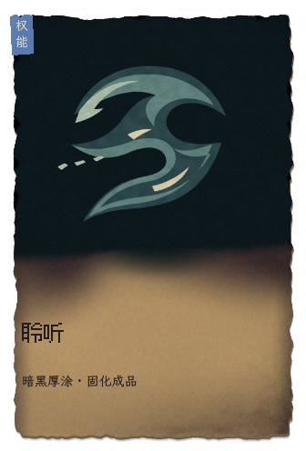 聆听循已有祈求或痕迹揭示一项具体未知事实；不是无媒介的全知侦察。 构形思路与边界构形 上下两片不对称宽褶围出向左张开的声隙，少量断续声痕进入；没有耳轮、耳垂、三道广播弧与近邻的区别 入梦的横向闭目面；谕言的向外发声审阅留意 输入方向由断续声痕与向内收束褶层表达；抽象空腔的联想仍待制作人判断，不宣称任意探测record/POWER_LISTEN可编辑原稿 SVG
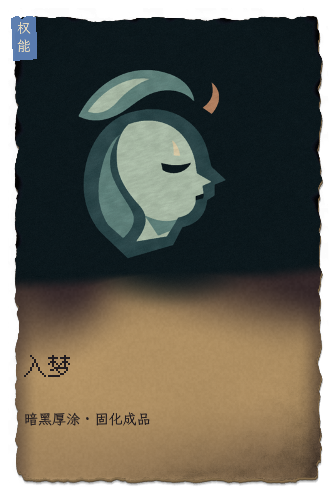 入梦通过梦境或祈求联系接触活着的具名人物，改变其忠诚与理智；不占每轮祈求回应。 构形思路与边界构形 右侧清晰闭目侧面占中央，额后悬一片反向梦痕；已剔除易读成天鹅的长钩梦带与近邻的区别 聆听的竖向空腔；面具鼻口与闭目可辨，不画病床审阅留意 象征触及已可达人物的梦，不画具体人物死亡或昏迷record/POWER_DREAM可编辑原稿 SVG
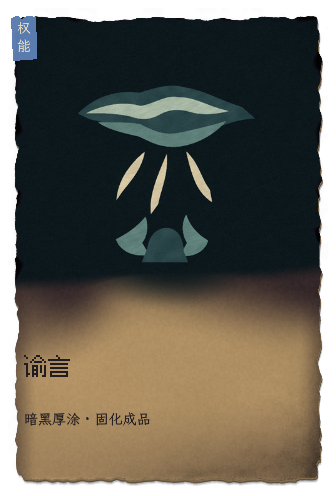 谕言向忠诚信徒传达谕言，为已选定的一次行动增加准备；不是预知所有未来。 构形思路与边界构形 悬置的侧向唇口向下发出三道宽薄言迹，下方小形接引与近邻的区别 聆听为输入，这张明确输出；不做书本审阅留意 言迹不是文字规则，具体行动仍由卡文显示record/POWER_ORACLE可编辑原稿 SVG
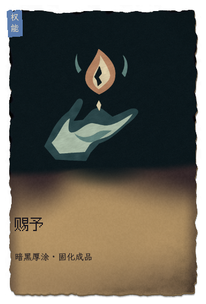 赐予使一名忠诚信徒永久获得所选属性提升，同时承担理智与暴露代价；每人终生只可成功一次。 构形思路与边界构形 下方张开的掌心承接一枚裂开的光核，上方滴落短迹与近邻的区别 任命为披带与肩；本张为掌与内核审阅留意 不画金币或装备，赐予是属性变化record/POWER_BESTOW可编辑原稿 SVG
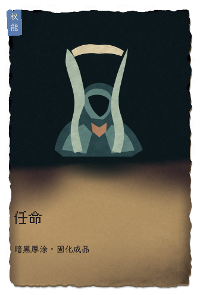 任命授予忠诚信徒领袖或护持者职务，下轮生效；不凭空建立教团。 构形思路与边界构形 无面半身承接悬下的不闭合披带，两侧长垂端构成职位的仪式感与近邻的区别 赐予的独立手掌；不使用皇冠表示统治所有人审阅留意 披带仅为职务隐喻，不增加具体制服设定；第一眼可能只读作职务身份而未读出任命动作record/POWER_APPOINT可编辑原稿 SVG
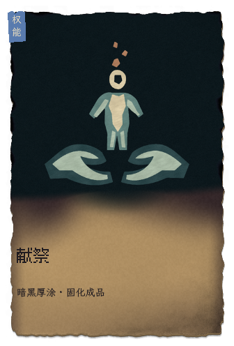 献祭牺牲真实教团成员的生命，选择换取信仰、洞见或创伤愈合；死者不复活。 构形思路与边界构形 巨大两掌向上交付中央无面微小人形，人形上端散成少量碎迹；去掉火盆与火焰与近邻的区别 余烬是壳内炭核；祭仪是实践场面；本卡主体是被献出的生命审阅留意 献祭确实导致目标死亡，采用无血腥消解；不表示收益保证record/POWER_SACRIFICE可编辑原稿 SVG
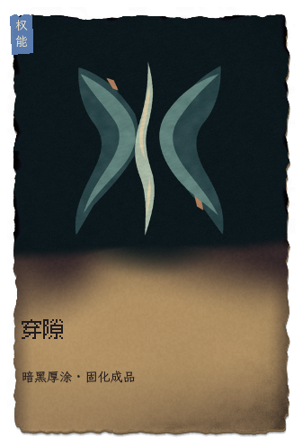 穿隙利用真实屏障弱点和执行者削弱当地屏障；不是跨世界迁移或降临。 构形思路与边界构形 斜向亮裂贯穿中央，两边厚膜向相反方向翻起，暗隙有深度与近邻的区别 降临是大尺度临近，穿隙是局部破口审阅留意 表示施行意图，不把行动成功当成保证record/POWER_BREACH可编辑原稿 SVG
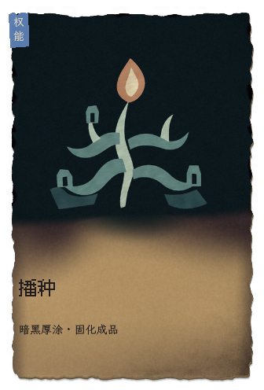 播种借真实秘密渠道和神迹传播媒介扩大教团，将当地非信徒转为信众。 构形思路与边界构形 上部单一异种下沉，分叉根系延伸至两侧不同暗壤，形成宽下窄上轮廓；三个根端补低对比微小居处，强调沿人类渠道延伸而非普通盆栽与近邻的区别 迁引是横向行列；活动不是此权能审阅留意 根系象征真实秘密渠道，不画凭空生成人口record/POWER_SEED可编辑原稿 SVG
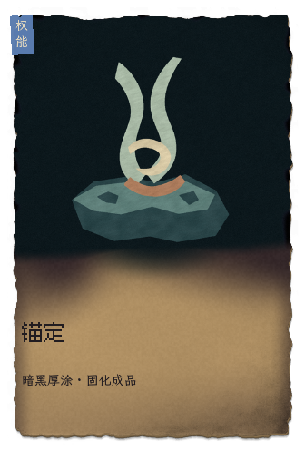 锚定在符合条件的真实机构建立或修复锚点，绑定圣物与具名护持者；供奉另计。 构形思路与边界构形 上部来自画外的双股带向下收成结，下方不规则石基承接，宽基窄颈与近邻的区别 镇界长钉是具体器物；维系是托持供养已有结审阅留意 依托不是官方许可，也不必使用某种钉record/POWER_ANCHOR可编辑原稿 SVG
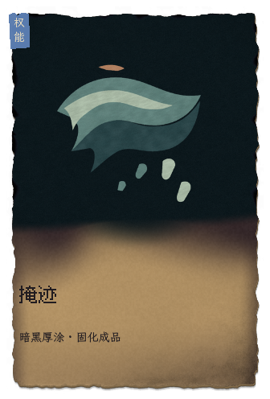 掩迹销毁指定传播证据以降低当地察觉；不能撤销已发动反制或抹去历史。 构形思路与边界构形 斜掠帷片遮去下方几枚脚迹，右端仍露出的残迹提供被掩的对象与近邻的区别 穿隙为分开；掩迹为覆盖审阅留意 不表示清除已经发动的抵抗或历史record/POWER_VEIL可编辑原稿 SVG
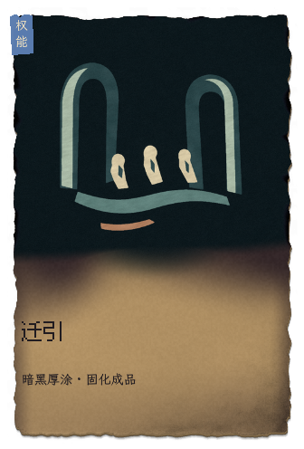 迁引沿既有通路迁移同一具名人物和随行信众到接收教团；并非复制或传送任意对象。 构形思路与边界构形 左右不等高的门隙之间是一条横向窄路，同一列小影穿行与近邻的区别 播种的根系扩张；无复制镜像人物审阅留意 门隙是既有通路隐喻，不表示任意传送record/POWER_TRANSFER可编辑原稿 SVG
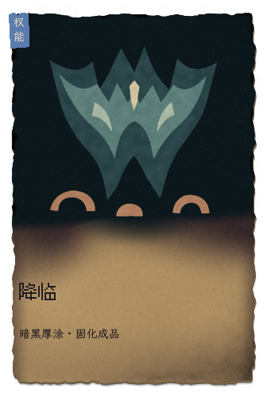 降临依赖活跃宇宙及星系锚点，连续三轮维持终极降临仪式；最后一轮才判定成败。 构形思路与边界构形 顶部宽大非人冠影下垂，底部三枚小世界弧面被压出极小尺度，竖向中空与近邻的区别 穿隙的局部膜；不要复用中央眼睛审阅留意 表示终极仪式主题，不画一定完成的结局record/POWER_MANIFEST可编辑原稿 SVG
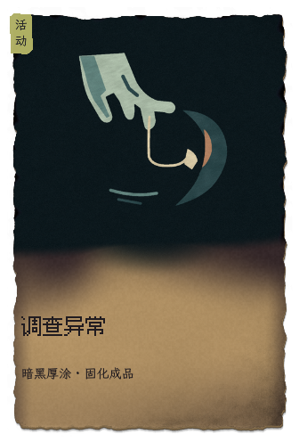 调查异常一位观察者调查一处真实异常，留下亲历记录；不是预告中的敌方调查。 构形思路与边界构形 一只垂下的手捏住悬绳，绳端在异常处横向偏折；大负形留下尚未解释的空洞与近邻的区别 独立复核为左右两观察者，运用异常为托举实体审阅留意 测绳是观察隐喻，不新增必须使用的仪器ROUTE_AXIOM_PROBE可编辑原稿 SVG
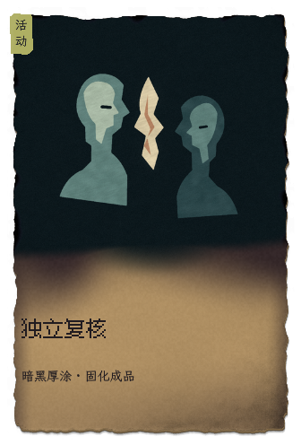 独立复核由另一位观察者对同一异常取得独立见证，强调不同观察来源。 构形思路与边界构形 左右不同高度的脸部侧影夹住同一悬浮异常，视线不画成箭头与近邻的区别 共同见证以四人环视和场景为主，此处仅双面校核审阅留意 图示不保证两份观察一定吻合ROUTE_AXIOM_RECHECK可编辑原稿 SVG
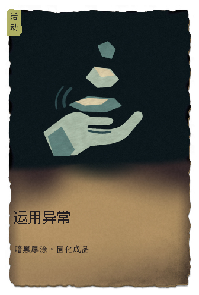 运用异常跨轮实际运用同一异常，积累使用记录；不是再次观看或抄写。 构形思路与边界构形 托举的掌上是三块失重石片，残留一次旧掌印；竖向错层与近邻的区别 调查异常的悬绳；研习的书页审阅留意 失重仅作为异常隐喻，不把具体玩法限定为重力异常ROUTE_AXIOM_REPEAT可编辑原稿 SVG
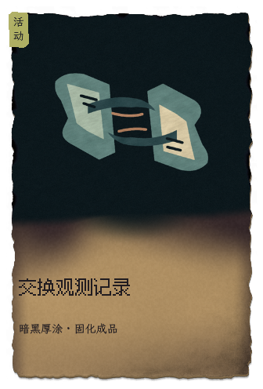 交换观测记录保持通信的两人交换并使用神迹观测记录，强调连通两端的实际使用。 构形思路与边界构形 两端卷页隔着大暗隙相向倾斜，各自伸出的墨迹相遇却不融为一张纸与近邻的区别 互换记录用两只交叉的手和实际交付物；此处强调通信审阅留意 不画成瞬移通路或无条件跨世界传送ROUTE_NETWORK_EXCHANGE可编辑原稿 SVG
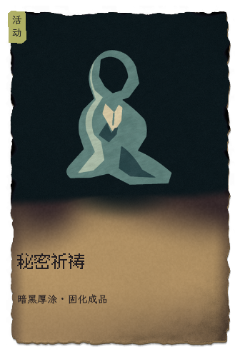 秘密祈祷已知晓邪神的一位自愿者私下祈祷，建立私人信仰联系；不先要求教团。 构形思路与边界构形 蜷下的披衣单人，以两只合拢的手构成细小骨白焦点；袍摆不成对称陶罐与近邻的区别 秘密集会是多人，举行祭仪是张臂上扬审阅留意 不把私人信仰画成必须已拥有教团ROUTE_PRIVATE_DEVOTION可编辑原稿 SVG
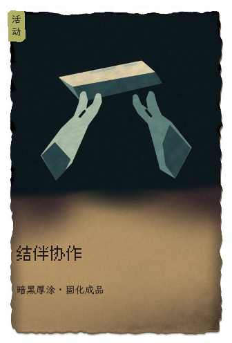 结伴协作安排两人共同完成工作，建立合作关系；不是集会招募或交换文件。 构形思路与边界构形 左右两臂同时支住一块斜向石梁，手势相反但力向同一处与近邻的区别 契约不是握手，传授不是共同举物审阅留意 石梁是共同工作的隐喻，不新增建造系统ROUTE_JOINT_WORK可编辑原稿 SVG
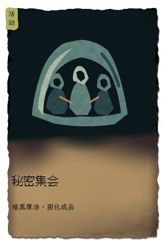 秘密集会由教团成员秘密召集当地人，招募信众；与单人私祷区别。 构形思路与边界构形 一大片包裹式帷幕内三个头肩向中央压低，宽横向整体留中央密谈负形与近邻的区别 共同见证没有遮幕且朝向异象；此处朝向彼此审阅留意 人数是构图，不表示实际招募固定三人ROUTE_COVERT_GATHERING可编辑原稿 SVG
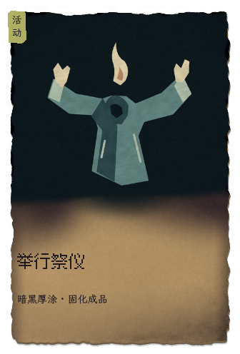 举行祭仪主持一次真实祭仪，发展信众并留下仪式见证；不是推算日期或教习。 构形思路与边界构形 袖口向左右上挑，一束折叠的烟焰贯穿中央，身体低暗，仪式动作主导与近邻的区别 私祷的收拢；传授的两人上下关系审阅留意 火与衣袍为象征，不限定文明具体礼服ROUTE_CALENDAR_RITE可编辑原稿 SVG
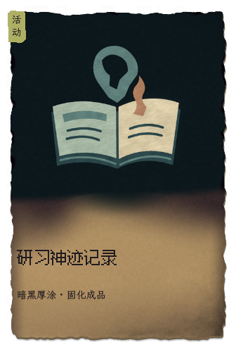 研习神迹记录同一操作者跨轮实际研习同一份神迹记录，积累可锚定的实践。 构形思路与边界构形 翻开的厚页占下半，页脊伸出一道曲折的墨迹；上方俯读阴影与书之间保留距离与近邻的区别 推算祭日是节拍刻木；交换是两份分离记录审阅留意 只能示意实践，不能把累积次数图示成固定数ROUTE_RECORD_PRACTICE可编辑原稿 SVG
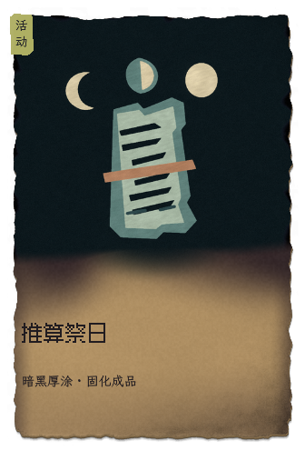 推算祭日同一记录者跨轮沿用异常节拍，建立依靠神迹的历法；不是普通日历。 构形思路与边界构形 偏斜的宽木片上疏密不齐的节拍刻痕，上沿由暗至明的三个月相；一枚横钉标当前节拍与近邻的区别 不使用现代日历格或沙漏；与经书明显分离审阅留意 月相是周期隐喻，不声明每轮等于日或月ROUTE_CALENDAR_KEEPING可编辑原稿 SVG
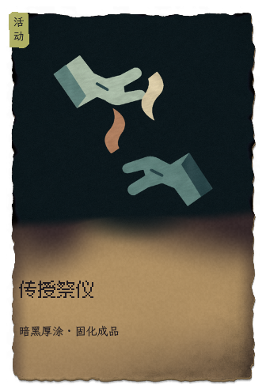 传授祭仪老师传授祭仪，随后由原学徒另轮独立施行；包含教与学的传承关系。 构形思路与边界构形 上方骨白手拈出弯曲祭形，下方暗色学徒手模仿但尚未接触；对角传承与近邻的区别 结伴协作两手同一平面；此处上示下学审阅留意 不表示老师把实体法器赠与学徒ROUTE_RITUAL_TRANSMISSION可编辑原稿 SVG
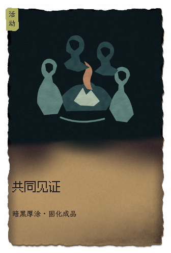 共同见证召集四人共同见证同一件事，为后续保全记忆的祈求准备真实情境。 构形思路与边界构形 四个不同方向的头肩从外围向内围合，中央一块暗潮和亮裂隙作为共同事件与近邻的区别 秘密集会朝彼此且遮蔽；这里向中间的同一对象审阅留意 人物没有具体身份，避免伪造参与者肖像ROUTE_MEMORY_CIRCLE可编辑原稿 SVG
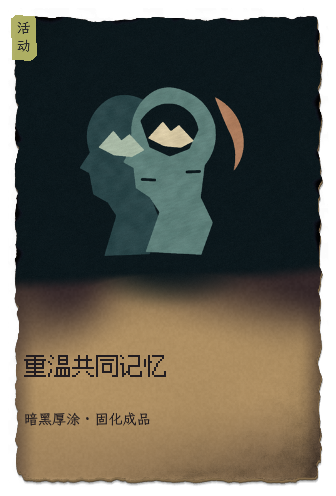 重温共同记忆原参加者跨轮重温同一共同记忆，保留共同见证。 构形思路与边界构形 双重侧头轮廓内部重复同一缺口山形，轮廓一明一暗错位；回忆而非共同现场与近邻的区别 共同见证外向景物，此处内在重影审阅留意 不画已完成记忆固化状态ROUTE_MEMORY_PRACTICE可编辑原稿 SVG
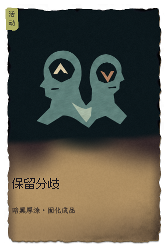 保留分歧原参加者跨轮保留互相矛盾的记忆，不将相斥视角强行合并。 构形思路与边界构形 两个背向的侧影由下部同一条衣褶连接，冠部一处向上明、一处向下暗的互斥缺口与近邻的区别 独立复核为相向并查同一异常；此处保留分离审阅留意 不是两派决斗或必然破裂ROUTE_DISSENT_PRACTICE可编辑原稿 SVG
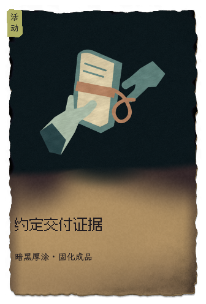 约定交付证据两端约定谁交付哪份真实证据，确立保管与交付义务；尚未完成履约。 构形思路与边界构形 一只手握封卷，另一只手与它以未收紧的带结相约；记录留在原持有者手内与近邻的区别 互换记录有两份物、两向动作；此处一份证据与约定审阅留意 绑带为约定隐喻，不代表强制承诺或锁定交易ROUTE_PACT_AGREEMENT可编辑原稿 SVG
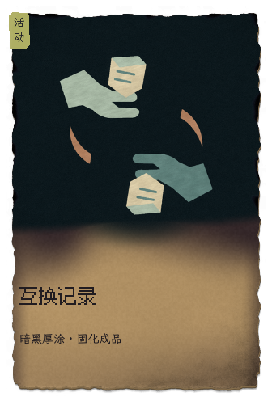 互换记录约定双方互换记录，再分轮分别完成两条实际交付义务；区别单向约定。 构形思路与边界构形 一上一下两只开放的手各托一份折页，斜向相对而不叠成握手；负形形成回旋与近邻的区别 交换观测强调通信；这里强调两份实际交付审阅留意 两只手仍留间距，避免画成两腿同时已履约ROUTE_RECIPROCAL_COVENANT可编辑原稿 SVG
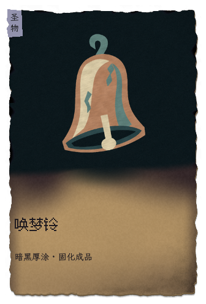 唤梦铃协助入梦的铃铛。 入梦准备 +10；可绑定锚点；绑定后不能携带。 类型来历不得当作每个实例的既成往事。 构形思路与边界构形 倾斜的大钟口、明晰铃舌与上方软绳结；器形占大面但不雕塑化与近邻的区别 所有其他圣物的剪影审阅留意 不编造具体实例来历relic/RELIC_ECHO_BELL可编辑原稿 SVG
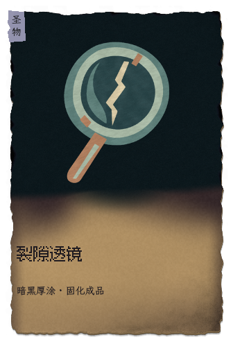 裂隙透镜协助穿隙的透镜。 穿隙准备 +10；可绑定锚点；绑定后不能携带。 类型来历不得当作每个实例的既成往事。 构形思路与边界构形 不规则厚镜框斜立，镜内偏折的裂缝与外侧延续错位；短柄远离中心与近邻的区别 不是查证异常的调查图；镜是实体审阅留意 镜内异常是媒介隐喻，不揭示未知事实relic/RELIC_WITNESS_LENS可编辑原稿 SVG
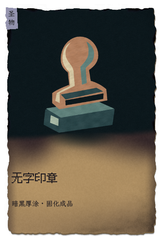 无字印章用于掩盖教团踪迹的印章。 掩迹准备 +10；可绑定锚点；绑定后不能携带。 类型来历不得当作每个实例的既成往事。 构形思路与边界构形 宽底印面与窄握柄，正面深暗空白，背后附一个不完整淡印痕与近邻的区别 铃的开口轮廓；不用标准官印文字审阅留意 无字不等于清空历史relic/RELIC_HOLLOW_SEAL可编辑原稿 SVG
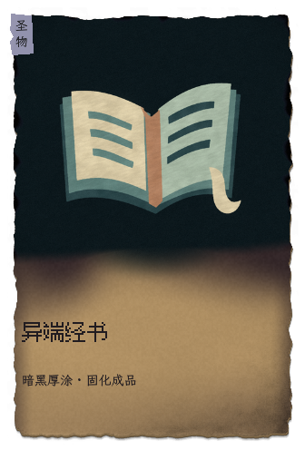 异端经书用于传播信仰的经书。 播种准备 +10；可绑定锚点；绑定后不能携带。 类型来历不得当作每个实例的既成往事。 构形思路与边界构形 不对称摊开的旧书，左右页互相反向的曲行，页尾像丝带翻起与近邻的区别 活动研习以行为关系为主，这张明确是一本书审阅留意 不绘真实可读符文或杜撰具体教义relic/RELIC_LIVING_SCRIPT可编辑原稿 SVG
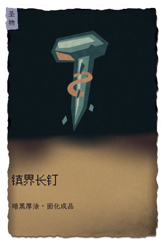 镇界长钉用于建立锚点的长钉。 锚定准备 +10；可绑定锚点；绑定后不能携带。 类型来历不得当作每个实例的既成往事。 构形思路与边界构形 宽锤头与向下渐细长方钉身倾斜贯穿，锈纹与绕钉旧绳为次形与近邻的区别 锚定不采用钉形；此卡才是工具实体审阅留意 锚定可用其他媒介，不能把此钉画成唯一方案relic/RELIC_ROOT_NAIL可编辑原稿 SVG
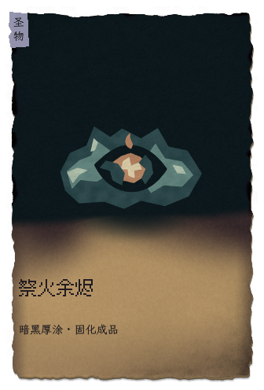 祭火余烬可用于献祭或降临仪式的余烬。 献祭或降临准备 +10；可绑定锚点；绑定后不能携带。 类型来历不得当作每个实例的既成往事。 构形思路与边界构形 横向裂壳包住小暖核，交错炭片遮挡核心，只有一缕极短余火；没有上升旺火与近邻的区别 献祭以人形为主，祭仪以行动为主，此卡是残存的器物媒介审阅留意 不虚构实例来历，当前炭核造型的器物感仍待制作人判断relic/RELIC_LAST_EMBER可编辑原稿 SVG
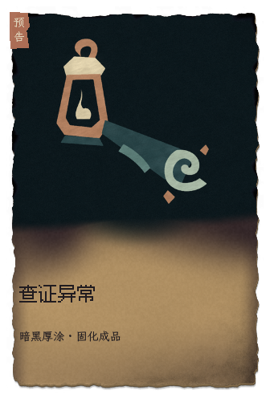 查证异常尚未发生的反制计划：证据确认 / 匿名保护失效。条件：有真实暴露事实但未被确认的存活人物或圣物。图像不得暗示已经结算或必然成功。 构形思路与边界构形 上左垂悬灯的厚重剪影；斜光只接近下右不规则烙痕，保留未照透暗部。与近邻的区别 不同于玩家调查的一人亲历；突出外界扫视。审阅留意 灯是调查隐喻，不限定文明必须使用此器械；未确认对象不画出身份。resistance/RESIST_TRACE可编辑原稿 SVG
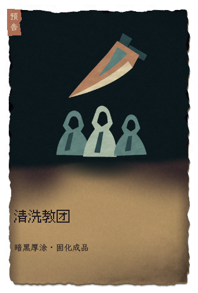 清洗教团尚未发生的反制计划：信众流失 / 凝聚削弱。条件：本域有教团且有与之关联的已确认人物证据。图像不得暗示已经结算或必然成功。 构形思路与边界构形 单边斜刃从右上压向下方一组仍完整的袍影；锋刃与人物之间保持大块未接触空隙。与近邻的区别 区别扣押的围合手势与抹除的单根目标。审阅留意 袍影仅象征教团群体，不指定身份或人数；无尸体、断裂或已结算损伤。resistance/RESIST_PURGE可编辑原稿 SVG
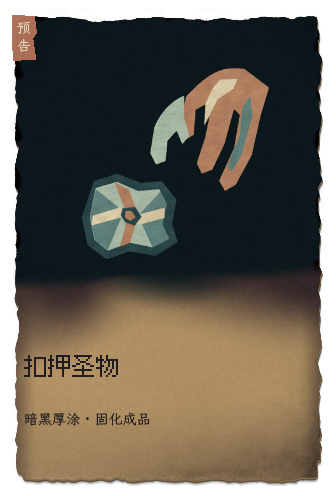 扣押圣物尚未发生的反制计划：圣物扣押 / 锚点休眠。条件：已确认位置且在本域可控制范围的圣物。图像不得暗示已经结算或必然成功。 构形思路与边界构形 右上巨大手指即将围拢左下不透明不规则裹布包；包裹无铃口、柄或可辨物件类型。与近邻的区别 手的包围动势区别清洗的斩断。审阅留意 中性包裹不假定圣物类型，手未合拢，不画已扣押状态。resistance/RESIST_SEIZE可编辑原稿 SVG
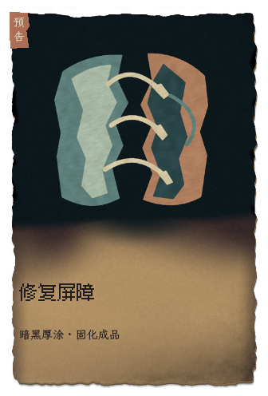 修复屏障尚未发生的反制计划：屏障修复 / 净化污染。条件：本域有破口且秩序机构仍在运作。图像不得暗示已经结算或必然成功。 构形思路与边界构形 两片厚实屏障向中央裂口收拢，短缝针跨越部分空隙，长线未收紧。与近邻的区别 纵向裂膜与横向悬刃清楚不同。审阅留意 缝合是秩序修复隐喻，裂口仍存在，不保证修复成功。resistance/RESIST_REPAIR可编辑原稿 SVG
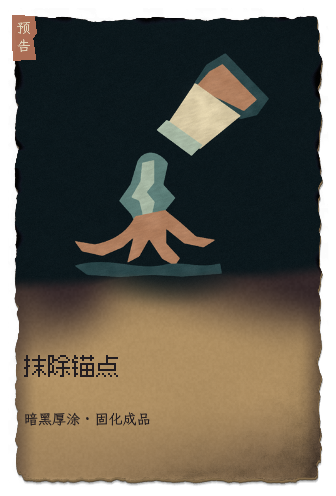 抹除锚点尚未发生的反制计划：锚点摧毁。条件：本域有效锚点及其已确认媒介或护持证据。图像不得暗示已经结算或必然成功。 构形思路与边界构形 宽刮刀悬在完整的扎根墨结旁，上方斜势对下方扎根形。与近邻的区别 不是主动解绑；外来硬工具对现实依托的压迫。审阅留意 刀未接触锚根，不画已经摧毁。resistance/RESIST_ERASE可编辑原稿 SVG
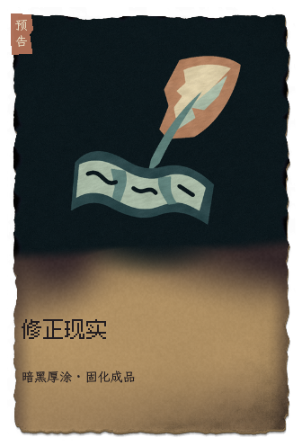 修正现实尚未发生的反制计划：本体创伤 / 净化污染。条件：已确认法则例外与可追溯至玩家的机构记录。图像不得暗示已经结算或必然成功。 构形思路与边界构形 大羽笔从右上压来，尖端悬于一片被异常扭曲的厚纸纹理；留出未接触距离。与近邻的区别 大羽片与折叠现实面区别修复裂膜。审阅留意 书写是现实解释权隐喻；不显示已完成的新法则。resistance/RESIST_REWRITE可编辑原稿 SVG
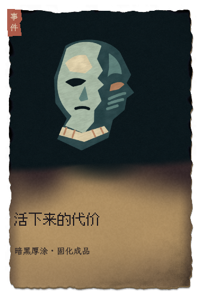 活下来的代价神迹幸存者面临日常生活与变异暴露之间的代价：保护见证者或接受变异并公开。 构形思路与边界构形 斜立的半张人面，另一半留作凹陷异影；颈部一条粗缝带与近邻的区别 不是权能赐予的施加动作审阅留意 仅指幸存代价的两难，不宣告选择变异event/EVENT_01可编辑原稿 SVG
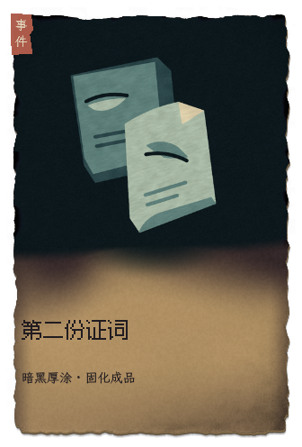 第二份证词出现可选择保密或公开收录的第二份证言；不是直接研习神迹记录的活动。 构形思路与边界构形 两张错位折页各留下不同侧面的口述轮廓；小的第二张向前翻开与近邻的区别 研习是观看材料，此处是第二来源出现审阅留意 两份并不自动一致或真实event/EVENT_02可编辑原稿 SVG
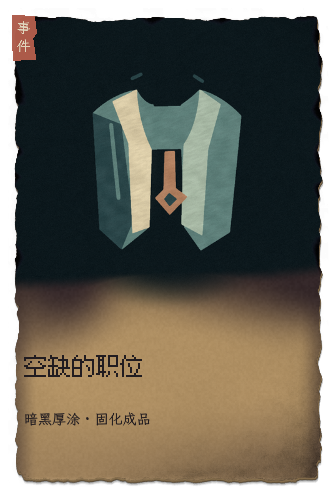 空缺的职位机构职位空缺，支持合作方继任或接受对手／空缺；不能画成玩家已任命成功。 构形思路与边界构形 沉重披带悬成空肩，中央颈位完全空缺，下端有垂印与近邻的区别 任命是授予，此处无人承接审阅留意 不暗示某人死亡或某个既定继承者event/EVENT_03可编辑原稿 SVG
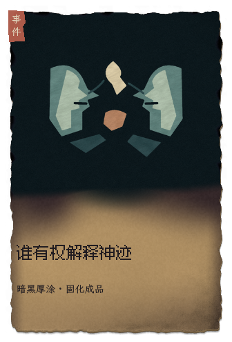 谁有权解释神迹神迹解释权出现正统与异端的争执；可允许合格异端传播并承担正统否认。 构形思路与边界构形 两侧相向的口部剪影围绕一枚未被占有的神迹；上下各出相斥的解释痕与近邻的区别 不与共同记忆中的头部重叠构图共用审阅留意 不宣告正统或异端哪方胜出event/EVENT_04可编辑原稿 SVG
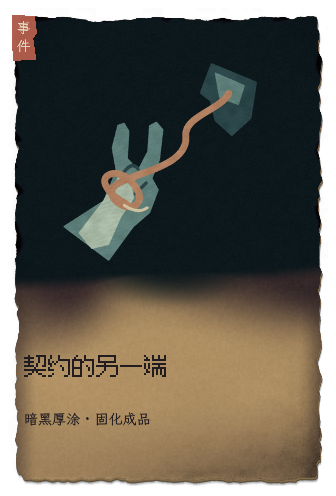 契约的另一端神迹契约另一端的义务成为冲突：付代价解除，或维持义务并承受敌意。 构形思路与边界构形 近处手腕被契线绕住，线穿过远处阴影袖口，另一端被暗处吞没与近邻的区别 活动约定是建立义务，此处强调已被牵连审阅留意 不是必须采用血契，也不展示另一端身份event/EVENT_05可编辑原稿 SVG
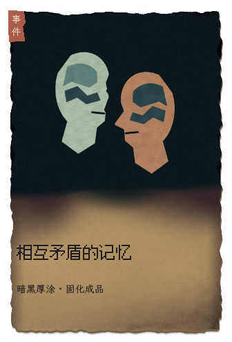 相互矛盾的记忆见证者的记忆彼此相斥：保留分歧，或付代价平息争议并失去一份见证。 构形思路与边界构形 正反两个人面占据相交空间，内侧两道不相容的地平线与近邻的区别 不是记忆消失或两张同图复印审阅留意 不把一方画成虚假或邪恶event/EVENT_06可编辑原稿 SVG
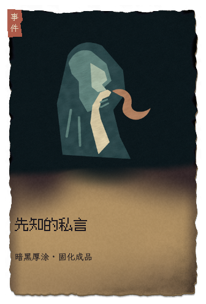 先知的私言先知擅自解释神意，需纠正其说法或允许该解释改变教团主张；区别玩家谕言。 构形思路与边界构形 侧面衣袍与遮口掌，私语从掌背绕出，与上方直落的痕迹错向与近邻的区别 不是玩家发出谕言审阅留意 不指定先知性别或具体长相event/EVENT_07可编辑原稿 SVG
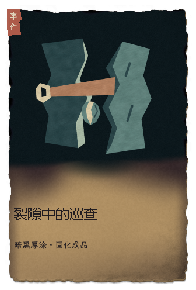 裂隙中的巡查裂隙中暴露的圣物受到巡查：撤走媒介，或留下并接受调查；不是主动穿隙。 构形思路与边界构形 一条斜裂隙被侧方灯光切过，裂隙底部保留匿名媒介暗形与近邻的区别 不是穿隙权能或未来查证的通用预告审阅留意 不给未公开圣物造具体器形event/EVENT_08可编辑原稿 SVG
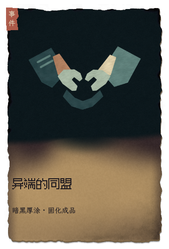 异端的同盟异端冲突中的合作机会：合作可取得此前不可接触的材料，也可保持距离隐蔽。 构形思路与边界构形 两种衣袖伸来相触的两掌，手掌之间留一道暗缝与近邻的区别 不是已完成协作或单纯两人聚集审阅留意 相触不等于联盟必定成立event/EVENT_09可编辑原稿 SVG
圣物被公开陈列一件真实圣物被外界公开陈列：付代价赎回，或放弃这次机会；不能固定成某一圣物类型。 构形思路与边界构形 两侧退开的帷幕与中央托台，匿名媒介作为不规则封存形与近邻的区别 不是玩家执行公开操作的高举动作审阅留意 封存轮廓是圣物通用代称，不固定物种event/EVENT_10可编辑原稿 SVG
现实的反扑已经预告的现实修正面临最后处置：销毁指定修正记录以取消，或承受反制。 构形思路与边界构形 厚重规整层带向下压近，底下仅剩一处扭曲缝隙；仍留未合拢的空隙与近邻的区别 预告修正现实尚在书写，这里迫近最后处置审阅留意 不是反制已经成功event/EVENT_11可编辑原稿 SVG
没有回应的人未获回应的求告者将离开：任其离去，或付代价重开一次请求窗口；不代表已回应。 构形思路与边界构形 一道不回应的暗门，下面单手逐渐抽离，留出大面积上方空白与近邻的区别 不是祈祷活动的向上合掌审阅留意 不画成死亡或已经关死请求event/EVENT_12可编辑原稿 SVG
锚定在符合条件的真实机构建立或修复锚点，绑定圣物与具名护持者；供奉另计。 构形思路与边界构形 上部来自画外的双股带向下收成结，下方不规则石基承接，宽基窄颈与近邻的区别 镇界长钉是具体器物；维系是托持供养已有结审阅留意 依托不是官方许可，也不必使用某种钉anchor/bind可编辑原稿 SVG
维系持续配置护持者、媒介与实际供奉，使既有锚点保持活跃并贡献苏醒；不是重新建立锚点。 构形思路与边界构形 中央已有束结由下方分开的两掌托持，侧面细短供养痕汇入；主形向上托举与近邻的区别 锚定的下沉石基；本张已有联系审阅留意 不把持续费用画成免费修复anchor/maintain可编辑原稿 SVG
携带令合格人物携带受控圣物以使用其辅助作用；区别永久赐予。 构形思路与边界构形 一只掌将匿名媒介托进贴身衣襟，衣料围合与近邻的区别 不是永久赐予审阅留意 不指定持有人身份relic/equip可编辑原稿 SVG
卸下将人物携带的圣物卸下，回到当地库藏；不是跨世界迁引。 构形思路与边界构形 张开的手指刚离开下方布垫上的完整媒介与近邻的区别 不是追回遗失物审阅留意 布垫仅是库藏的视觉隐喻relic/unequip可编辑原稿 SVG
解绑解除圣物与锚点的绑定；需要承担关联锚点失去维系媒介的后果。 构形思路与边界构形 媒介完整，缠绕的带结向两侧松脱，末端断开而非物件裂开与近邻的区别 与分解的破碎主体明确区别审阅留意 不画剪刀作为必需工具relic/unbind可编辑原稿 SVG
回收取得或取回遗落、扣押或机会中的真实圣物；各实例条件仍由规则核对。 构形思路与边界构形 手从上方伸入，被裂层半遮的媒介向手掌显出与近邻的区别 携带是贴身收纳，回收是取得控制审阅留意 通用隐喻不指明所有物件都在废墟relic/recover可编辑原稿 SVG
分解不可逆地分解一件真实圣物，换取其规定资源；不是普通卸下。 构形思路与边界构形 中央完整轮廓由下向上解离成少数大碎片，下有接纳余质的空掌与近邻的区别 与解绑保持完整的媒介相反审阅留意 不承诺特定资源收益relic/disassemble可编辑原稿 SVG
公开公开限时圣物机会，永久放弃物件以换取信仰并增加察觉；不是泛用公开信息。 构形思路与边界构形 手从下托起媒介，高处轮廓越过帷边，四周短目光趋向它与近邻的区别 事件公开陈列是静态托台，此处是玩家主动揭露审阅留意 不意味着此操作适用于所有圣物状态relic/public可编辑原稿 SVG
等待暂不处置当前圣物机会；原有期限不会延长。 构形思路与边界构形 布只覆住媒介一半，旁置一根已烧短的烛芯与近邻的区别 不是收回、隐藏或延长期限审阅留意 烛仅指时间仍在流逝relic/wait可编辑原稿 SVG
传教登记教团本轮扩张方针，轮末招募新信众，可能增加察觉；区别神力播种。 构形思路与边界构形 侧脸低语化成一条宽而断续的带，远端散成三个小披衣影；横向扩散与近邻的区别 秘密集会向内，此处向外审阅留意 小人数量仅象征，不能暗示保证招募order/expand可编辑原稿 SVG
敛藏登记教团本轮隐蔽方针，轮末付出信仰压低当地察觉；区别主动销毁特定证据的掩迹。 构形思路与边界构形 从上方垂下的布遮住半盏低灯，光只剩侧面的窄缝；大片完整静暗与近邻的区别 守持是开放承托，敛藏是主动遮覆审阅留意 隐匿不等于察觉归零或完全免疫order/conceal可编辑原稿 SVG
守持登记教团维持现状的方针，等待时机；不是修复世界屏障。 构形思路与边界构形 上下两掌留出容纳小焰的安全空隙，下方稳定承托，上方不握紧；整体横稳与近邻的区别 敛藏有覆盖布幕；此处没有熄灭灯火审阅留意 不暗示消耗固定圣物火种；只是维持组织的隐喻order/hold可编辑原稿 SVG
十二权能权能集合封面 构形思路与边界构形 非人手状的五股笔势由一道暗口伸出，末端朝不同方向；整体一枚大负形。与近邻的区别 不把聆听眼作为十二权能总封面。审阅留意 集合隐喻不暗示权能数量或新增机制。cover/power可编辑原稿 SVG
圣物档案圣物集合封面 构形思路与边界构形 闭册、铃壳和长柄片在同一摊开的布上错落，以实体剪影显示可保管的媒介。与近邻的区别 不同于任一单件圣物近景。审阅留意 仅集合封面，不表示玩家实际拥有这些物件。cover/relic可编辑原稿 SVG
人物档案人物集合封面 构形思路与边界构形 三片纵向残页，前后有各异侧面／正面剪影，轮廓错位但不画具体身份。与近邻的区别 不是集会或共同记忆的行为关系。审阅留意 仅档案封面，不替代角色程序立绘。cover/person可编辑原稿 SVG
轮初事件事件集合封面 构形思路与边界构形 横向打开的卷页，中央一张往高处翻起，下方落页延续转折；不靠沙漏暗示期限。与近邻的区别 区别单个事件与期限沙漏。审阅留意 不是事件必定造成灾难。cover/events可编辑原稿 SVG
锚点动态锚点对象 构形思路与边界构形 一束由上方暗处垂下的厚线穿过现实片层，向下分叉扎根；完整静止。与近邻的区别 与建立／维系动作分开，主画已存在对象。审阅留意 不表示锚点一定活跃；状态由卡文负责。object/anchor可编辑原稿 SVG
神迹证据动态证据选择卡 构形思路与边界构形 两片非规整材质残片叠放，烙痕只出现在一片，短线扎缚而非现代文件。与近邻的区别 区别经书和神迹研习。审阅留意 不把通用来源虚构成某一条真实记录。object/evidence可编辑原稿 SVG
机构动态机构选择卡 构形思路与边界构形 不规则厚门楣、无柱头的侧壁与三道门槛围合深暗入口；阴影大于装饰，不设古典山墙。与近邻的区别 建筑空间区别锚根和证据载体。审阅留意 以有现实组织依托的入口为隐喻，不指定希腊神庙或任一文明建筑，不另造锚定符号。object/institution可编辑原稿 SVG
命运回响缺来源时的结算兜底 构形思路与边界构形 两块不规则十面骰叠成斜向，面内只留浅刻痕，不画具体点数。与近邻的区别 只缺来源时兜底，不能冒充等待圣物。审阅留意 不生成检定结果，不暗示成功失败。fallback/resolution可编辑原稿 SVG